What Does a Music Transformer Know About Harmony?
Transformer models trained on symbolic music have become remarkably capable — yet how they internally represent musical structure remains largely opaque. When a model navigates a cadence (a chord resolution that signals the end of a phrase), does it "know" what key it is in? Does it track mode (whether the music is major or minor)? And can that knowledge be used to directly control what it generates?
We study these questions through a case study using Aria, a LLaMA-based symbolic music transformer, evaluated on Bach chorales. Using activation patching, we find that harmonic decisions are causally localized to middle layers. Linear probes tell the same story: mode (major/minor) becomes cleanly decodable at roughly the same layers where patching identifies causal concentration, while tonic identity emerges later.
We then show these representations are directly actionable. Steering the model along latent directions corresponding to harmonic change reliably elicits a deceptive resolution — while preserving structural coherence and generation quality. The model's internal harmonic knowledge, it turns out, can be directly manipulated at inference time to control its output.
Finding where harmonic information is represented
Activation patching is a standard tool in NLP interpretability: run the model on two inputs that differ in one specific way, inject the hidden representation from one run into the other at one layer during the forward pass, let it continue normally, and observe only what comes out. If the output shifts, we infer that the patched representation causally carries the information. This is the basic intuition behind causal abstraction: intervening on an internal representation to test whether it corresponds to a hypothesized computational variable.
Applying this to symbolic music requires constructing a meaningful factual/counterfactual pair (two inputs that differ in exactly one harmonic property) can be challenging: Notes are represented by several tokens each (in Aria, pitch, onset, and duration are three separate tokens), so a single harmonic shift touches many of them simultaneously. And unlike most of NLP tasks, where generation can have one correct answer, free generation has no single correct continuation, making it hard to know what success even looks like.

We suggest using cadences. The major V→I resolution gives us a reasonable ground-truth baseline, and the third of the dominant chord is a single pitch token, the note that determines whether the cadence feels major or minor and with it the entire harmonic meaning of the resolution. One token swap may be enough to redirect the model's continuation entirely.
One note. Two harmonic worlds.
We take Bach chorales at their V→I cadence point and lower the third of the dominant chord by a semitone, turning V into v. Same rhythm, same voice leading. Only the harmonic quality of the dominant changes. We then run Aria on both versions and observe what each yields.
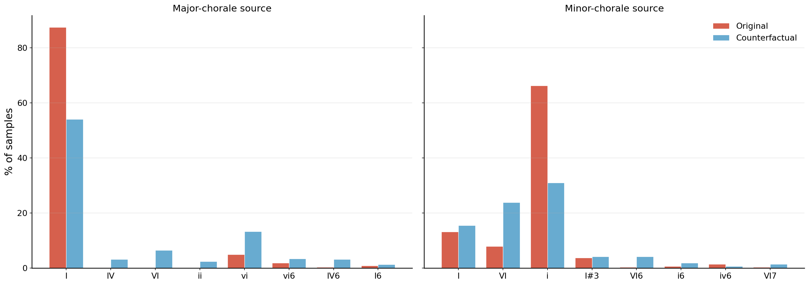
Harmonic information builds progressively from middle layers onward
Activation patching: one layer at a time, we replace the residual stream at the last token position in the original run with the counterfactual's, let the run continue, and measure how much the output shifts toward the counterfactual's harmony, by looking at samples where the first generated pitch belongs to one resolution chord but not the other.
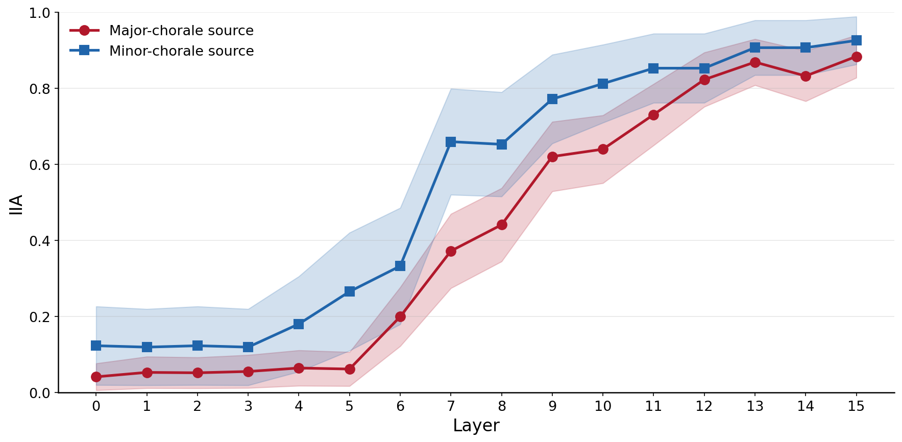
What patching sounds like (same prompt, internal state replaced at layer 8):
What does the model actually encode in those layers?
Having located the causally active layers, we ask what harmonic information is encoded there. We train a separate linear probe on each layer's residual stream, testing whether major/minor mode and key identity are linearly decodable at each depth, and whether the accuracy peaks align with the layers where patching found its effect. Key identity spans 18 classes rather than 24: not all keys appear in the Bach corpus.
What harmonic structure is encoded in the layers that matter?
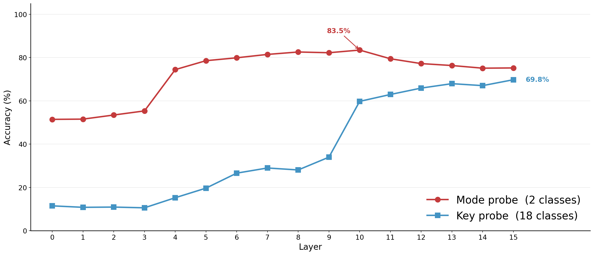
The model's internal space mirrors music theory
We group the 18 keys in two ways: by shared key signature (relative pairs: C major ↔ A minor) or by shared tonic (parallel pairs: C major ↔ C minor). Which grouping resolves the most probe errors?
This suggests the model may group relative keys more closely in its representation space, consistent with music theory: relative keys share their full pitch collection, while parallel keys differ by three pitches.
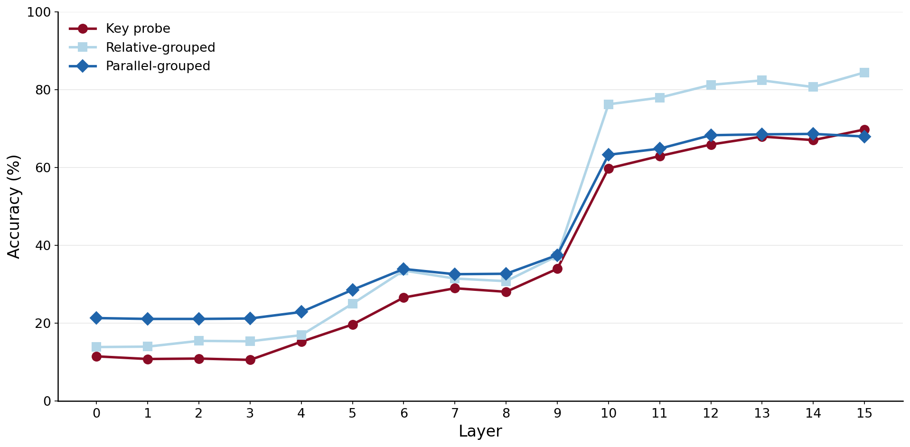
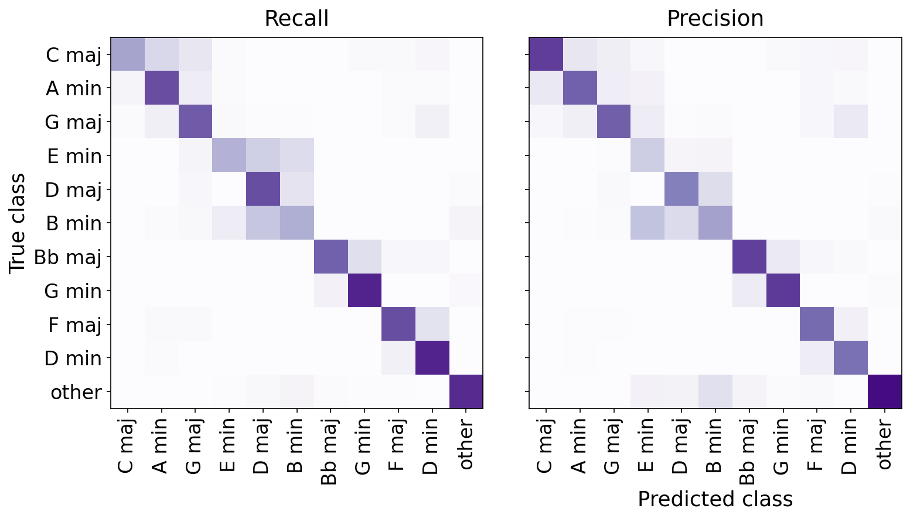
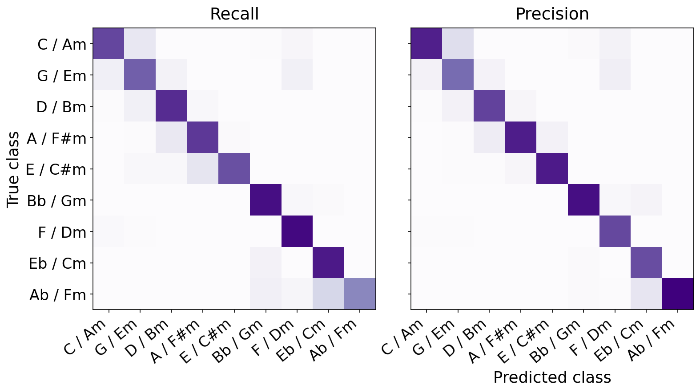
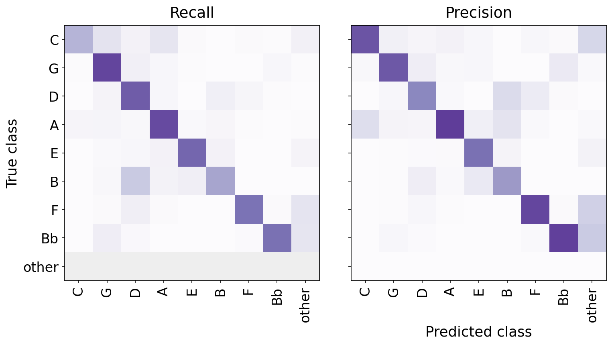
No music theory was given during training. The model learned this geometry from data alone.
Can we redirect a harmonic decision already in progress?
We return to the cadence, the same point where patching identified causal concentration. This is where the model appears to commit to a harmonic resolution, and where intervening on its internal state may give more direct access to the generative decision.
Can the probes we trained be used to steer the model's harmonic output?
The probe weight vectors live in the same space as the model's hidden states. Taking the difference between two class representatives gives a displacement that points from one harmonic class toward another. Injecting a scaled version of this displacement at inference time nudges the model's internal state toward the target class.
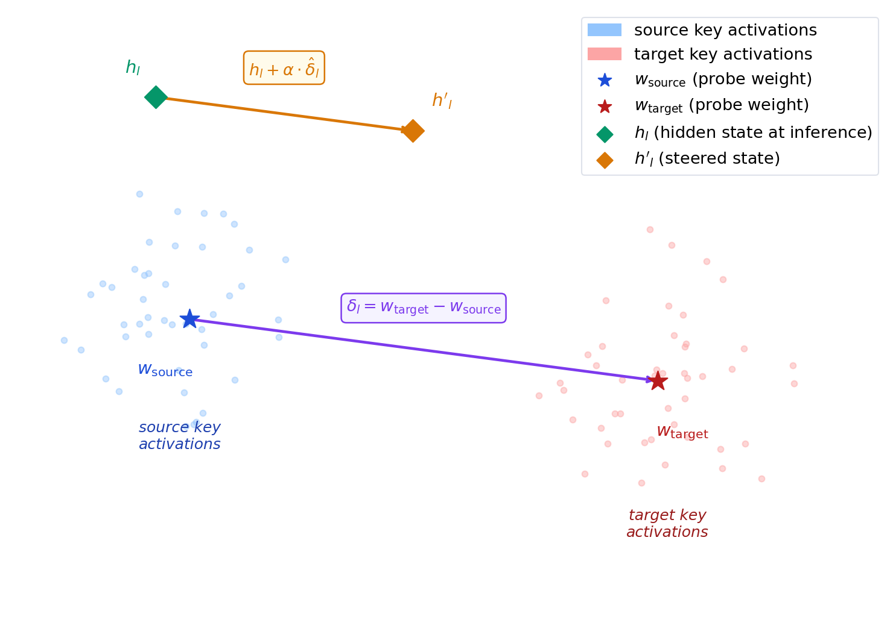
We test three steering targets, each applied at the layers and positions where the probes found the strongest signal: relative minor (layers 11–15, all positions, α=0.20); parallel minor (layers 11–15, all positions, α=0.10); and mode (layers 4–15, last bar only, α=0.25). The model is not retrained; only the hidden states are nudged at inference time, and we observe what harmonies Aria generates next.
For relative and parallel minor, the target is clear: we hope to hear the continuation move toward the relative minor (vi) or parallel minor (i) respectively. For mode steering, there is no single target key. We hope for a shift toward some minor tonality, ideally one close to the original in the sense of few new accidentals. In that sense, relative minor is the most natural landing point.
Selected examples where the steered continuation resolves to the intended target harmony:
Across all test cuts, the full resolution distribution shifts as follows:
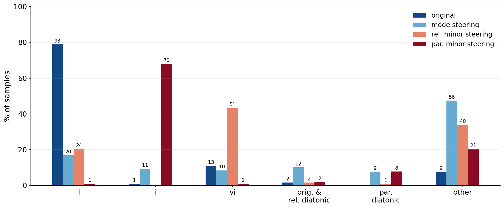
Note on mode steering: the largest share of redistributed mass went to chromatic or irregular harmonies, not concentrating toward any target key even after combining mode and tonic probes across many α values (a separate experiment; results not shown here). Mode is readable but harder to steer than key identity.
Does steering degrade the generation?
A natural concern is that steering simply inflates the probability mass on the tonic chord of the target key, rather than producing genuinely varied musical output. We measure generation quality across four dimensions: structural integrity, local note statistics, perceptual similarity to Bach, and harmonic variety.
| Condition | Layers steered |
Sequence-level | Note-level | Quality | Harmony | |||||
|---|---|---|---|---|---|---|---|---|---|---|
| Struct. error (%) ↓ |
Pitch repeat (%) ↓ |
Avg gen. dur. (ms) |
Out of range (%) ↓ |
Note dur. avg (ms) |
Pitch var. |
FAD ↓ | RN entropy (bits) |
Top-1 dom. (%) ↓ |
||
| Baseline (no steering) | n/a | 0.8 | 0.0 | 3650 | 0.0 | 721 | 59 | 0.029 | 1.5 | 52.0 |
| Relative minor (α=0.2) | 11–15, all pos. | 0.8 | 0.8 | 3714 | 1.7 | 720 | 60 | 0.037 | 1.6 | 50.5 |
| Parallel minor (α=0.1) | 11–15, all pos. | 0.0 | 0.0 | 3853 | 0.0 | 759 | 62 | 0.029 | 1.7 | 45.9 |
| Mode (α=0.25) | 4–15, last bar | 0.8 | 0.0 | 3500 | 0.8 | 715 | 65 | 0.033 | 1.9 | 38.4 |
Sequence-level: structural error = malformed pitch/onset/duration token triple; pitch repeat = generation of ≥4 identical pitches; avg gen. duration = length of the generated continuation. Note-level: out of range = ≥3 generated notes outside the normal piano range; note dur. avg = average duration of the generated notes; pitch var. = pitch variance across the generation. FAD = Fréchet Audio Distance against Bach's own continuations (VGGish, 16 kHz); lower is closer to Bach's style. Harmony: RN entropy = Shannon entropy of the chord distribution over the first generated bar (higher = more varied; ideally close to the baseline; steering should shift harmony, not collapse it); top-1 dominance = fraction of the first generated bar occupied by the single most common chord (lower = less repetitive).
Overall, steered generations remain close to the unsteered baseline across these metrics: structural integrity holds and harmonic variety is maintained, suggesting the steering does not meaningfully degrade the generation.
One layer carries most of the steering effect
Readable information across many layers does not mean all layers are equally causally responsible. For relative minor, no single layer was sufficient to redirect the resolution. For parallel minor, steering layer 12 alone (α=0.40) shifts 61% of resolutions to i, nearly matching all five layers (11–15) at α=0.10.
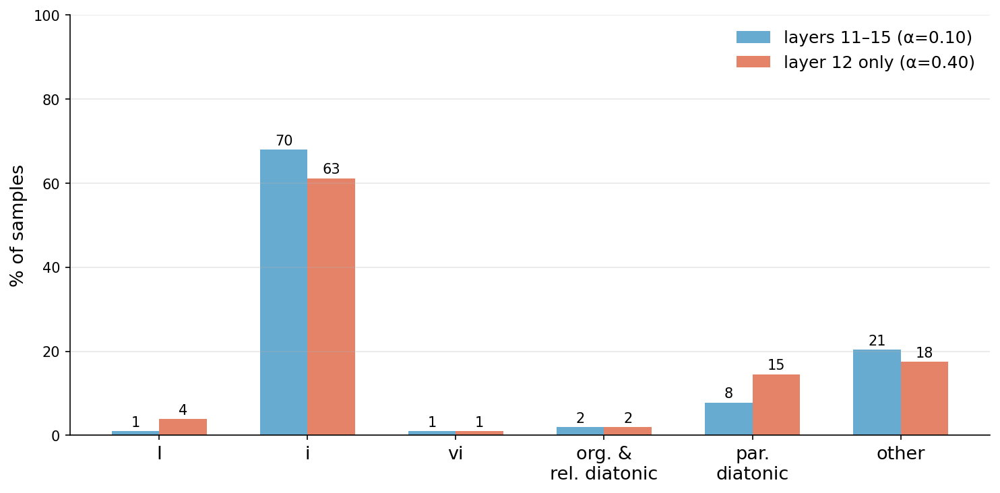
Our findings suggest that symbolic music transformers develop internal representations of tonal harmony that appear structured, localized, and to some extent directly manipulable, encoding mode before key, confusing exactly what music theory says is ambiguous, and responding to targeted steering in musically interpretable ways. All of this emerged from predicting the next token. No explicit rules were provided.
Related Work
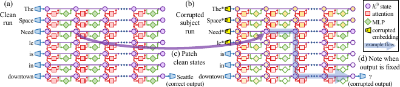
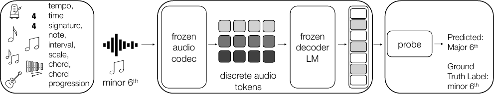
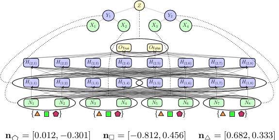
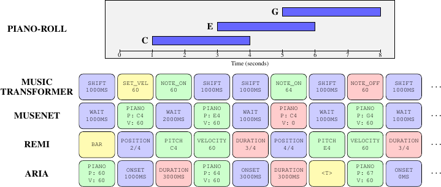
How to Cite
@misc{silberschein2025harmonic,
title={Harmonic Representations in Symbolic Music Transformers are Localized and Controllable},
author={Silberschein, Adi and Wei, Megan and Rott Shaham, Tamar},
year={2025},
eprint={XXXX.XXXXX},
archivePrefix={arXiv},
primaryClass={cs.SD},
url={https://arxiv.org/abs/XXXX.XXXXX}
}